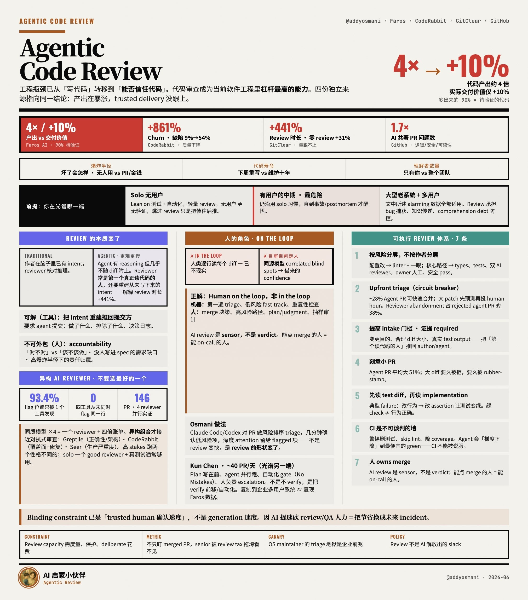

Faros AI产出 vs 价值
4x → +10%
图中最刺眼的数字对说明一个现实：代码写得更快了，但真正交付出去的可信价值并没有等比例增长。
这张图的核心不是“AI 帮你写更多代码”，而是：当产出暴涨，真正卡住交付的会变成 trusted human 确认速度。代码审查不再是末端礼仪，而是工程系统的信任阀门。
工程瓶颈已从「写代码」转移到「能否信任代码」。AI 时代最稀缺的不是生成速度，而是把风险代码变成可信交付的确认能力。
来自 Addy Osmani 的这张图把“AI 产出增幅”和“工程信任成本”放在同一张面板里，强调 review / QA 不是可有可无的旧流程，而是新瓶颈。

图中最刺眼的数字对说明一个现实：代码写得更快了，但真正交付出去的可信价值并没有等比例增长。
缺陷率 / churn 的跃迁说明：AI 不是天然减少坏代码，反而会把“需要被审查的坏代码”放大到新的规模。
审查时长和 AI 共著 PR 问题数都在上升，说明 review 已经从“末端检查”升级成工程吞吐的关键路径。
个人项目可以容忍更高的试错率，但一旦代码开始被复用、被依赖，就要把 review 重新拉回到显式流程。
这里最容易出现“既想要速度、又没有足够知识密度”的错位，AI 让产出更快，但审查习惯没跟上，风险会集中爆发。
系统越大、历史越久、理解它的人越多，review 的价值就越高。因为这里最需要的不是“写得快”，而是“变更可解释、可追踪、可回滚”。
图中强调：Agent 可以推理，但没有人的目的与责任链，所以必须要求决策日志和可追溯证据。
人不是退场，而是从逐行阅读变成最终裁决者：只审风险、只审异常、只审需要背书的部分。
底部结论说得很直白：如果为了 AI 提速就砍 QA / review 人力，换来的不是效率，而是未来的 incident。